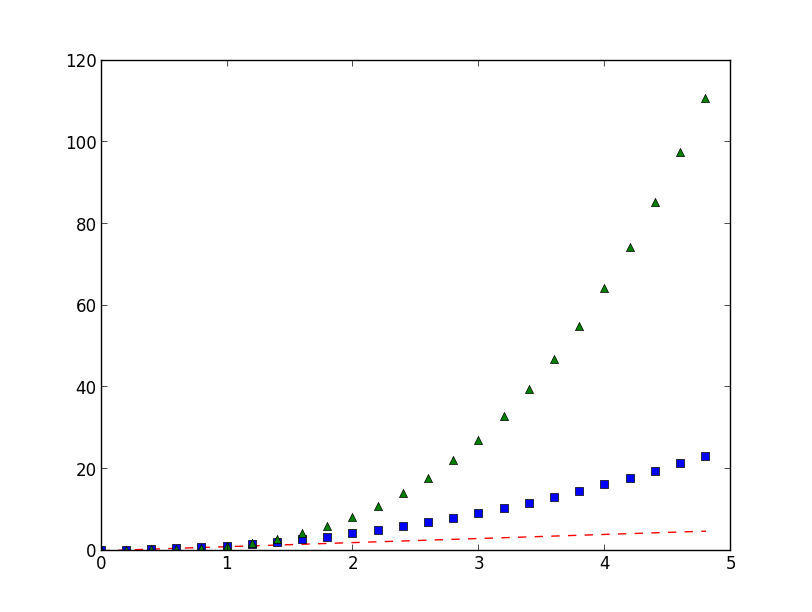
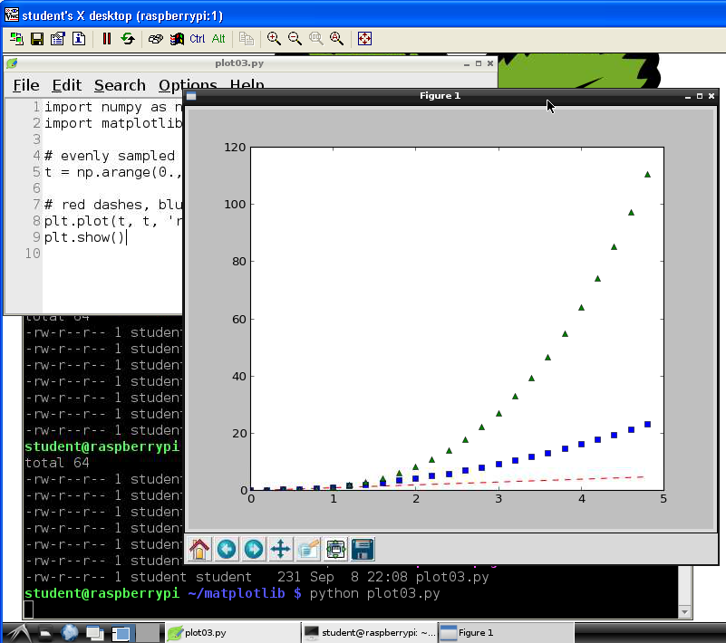

Notes by Dan Peirce (reformated from my pages at danpeirce.net46.net/dokuwiki/
This Python language extension was created to combine plotting capabilities similar to Matlab (similar syntax) with the Python programming language. There is a introduction to matplotlib at http://matplotlib.sourceforge.net/users/intro.html . matplotlib requires another language extension called NumPy which processes large arrays efficiently. NumPy is pre-installed on the Raspberry Pi Rasbian image.
From that link one can also find a tutorial on how to make plots from data. As a simple python example that generated the plot shown down below:
import numpy as np import matplotlib.pyplot as plt # evenly sampled time at 200ms intervals t = np.arange(0., 5., 0.2) # red dashes, blue squares and green triangles plt.plot(t, t, 'r--', t, t**2, 'bs', t, t**3, 'g^') plt.show()
This little Python script generated this plot (was run on the Raspberry Pi ) 
The image shown above was saved as a *.png file. A screen shot of how it looks on the Raspberry Pi remote desktop is shown below. This is the screenshot with the remote Raspberry Pi desktop sitting on a windows XP desktop using the tightvnc viewer. This can also be viewed on an Android tablet using android- vnc-viewer

The Raspbian image has Python already installed. numpy is also installed. To get matplotlib running on also needs python-matplotlib . To install just run the following:
sudo apt-get install python-matplotlib
You may also want to install the documentation
sudo apt-get install python-matplotlib-doc
After the documentation install the manual will be available at
These packages can also be installed on windows PC's.
Matplotlab is a library that allows one to create a graphical plot without worrying about the details of creating a GUI since matplotlab creates the graphical window transparently in the background. It also creates good quality plots with scales on the axis. For an alternative using Tkinter see
http://scipy.org/Getting_Started --I have started to work through some examples on the Raspberry Pi
:::sh sudo apt-get install python-scipy
Python has an interactive shell. IPython was developed to provide a more feature rich interactive shell (by a physicist). Can install debian package python-ipython and python-ipython-doc.